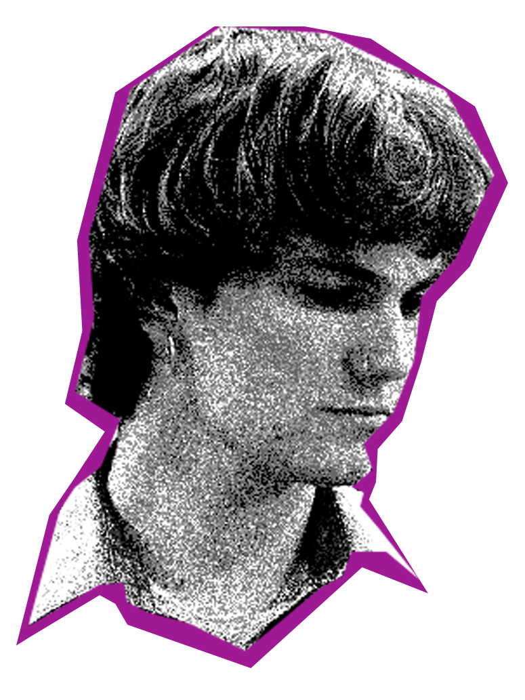

Through my design and video work, communication is at the front of my mind. I believe that telling a story as simply as possible is the most potent path to achieve the level of communication I strive for. In my video work, I exercise restraint in color, dialogue, and composition to create an atmosphere that is plainly confrontational. In my design work, I’m more inclined toward bold color, a sense of humor, and lightness. Although undeniably different, both practices are united by an informed simplicity and an importance of human connection.
